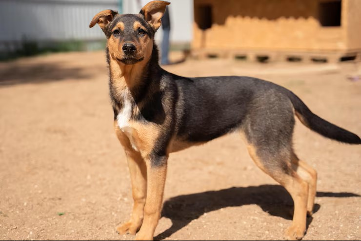
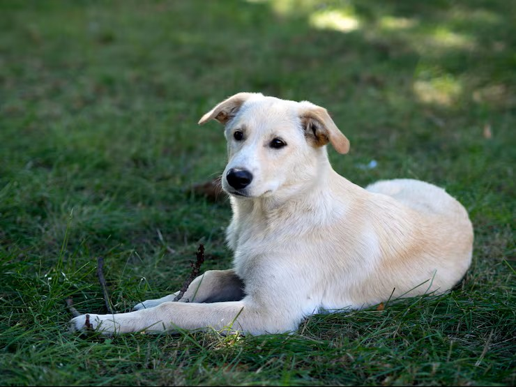
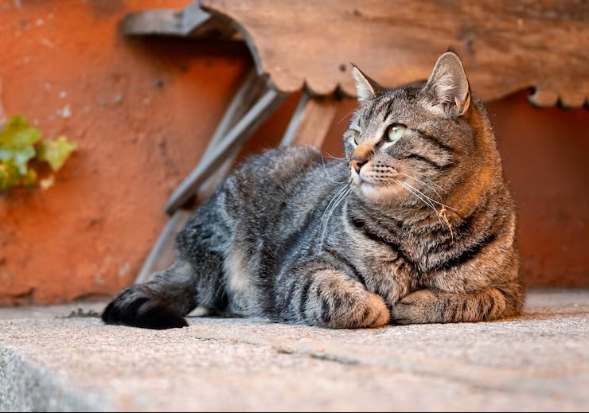
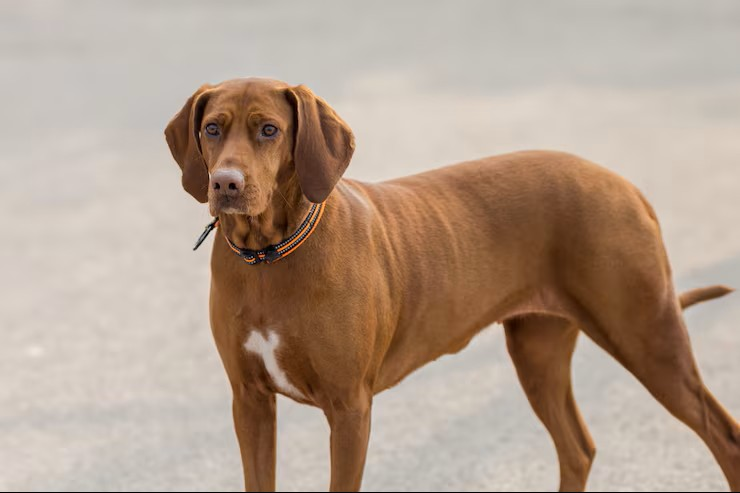

Luna, disfrutando de su lugar favorito: el jardín.
Disponible para adopción
Solicitar adopción
Hola, soy Luna.
Experta en paseos tranquilos, miradas tiernas y siestas cerca de ti.
| Edad | 2 años |
|---|---|
| Sexo | Hembra |
| Tamaño | Mediana |
| Raza | Mestiza |
La solicitud no es un compromiso. Es el primer paso para conocernos y resolver tus dudas.
Su historia
Luna llegó al refugio algo tímida, pero con muchas ganas de confiar. Con paciencia, rutinas suaves y paseos al aire libre, empezó a enseñarnos su lado más curioso y cariñoso.
Le encanta olfatear cada rincón del jardín y buscar una mano amiga al terminar el día. Ahora busca una familia que entienda que los mejores vínculos se construyen sin prisas.
Su salud
- ✔ Vacunación al día
- ✔ Desparasitada y esterilizada
- ✔ Identificada con microchip
- ✔ Revisión veterinaria favorable
Su comportamiento
- 🌿 Tranquila en casa: disfruta de las rutinas y de su propio rincón de descanso.
- 🐾 Sociable con otros perros: los encuentros deben ser graduales.
- ❤️ Cariñosa, a su tiempo: necesita paciencia al conocer personas nuevas.
¿Y si su próximo hogar es el tuyo?
Cuéntanos sobre ti. Te acompañamos en cada paso de la adopción.
OTRAS HUELLAS, OTRAS HISTORIAS
También esperan conocerte.

